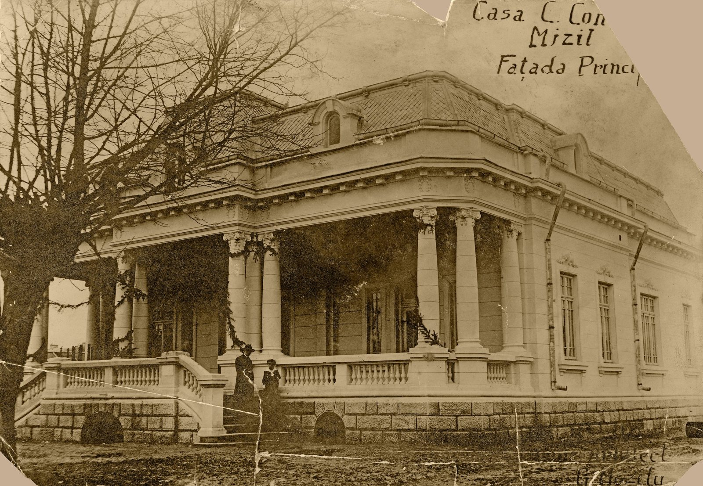
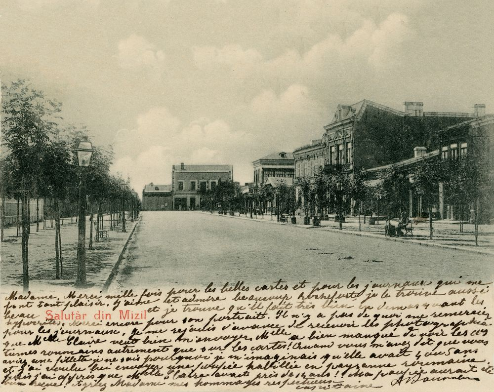
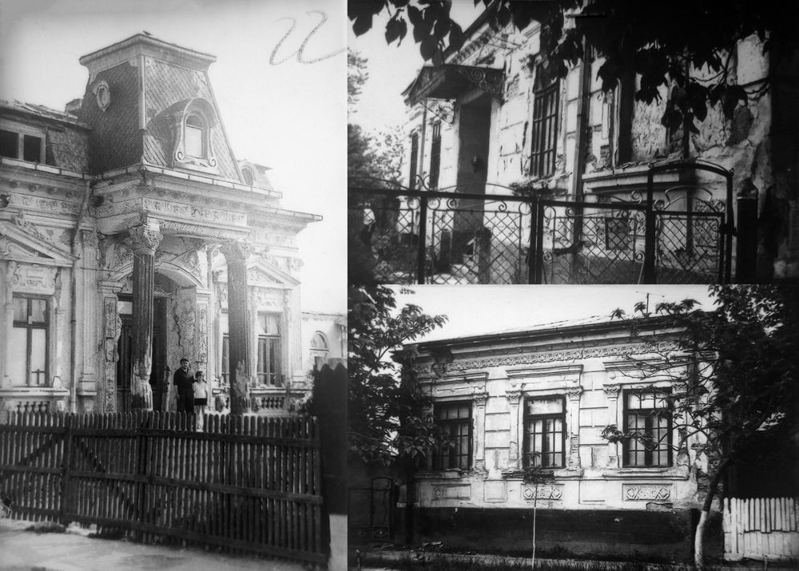
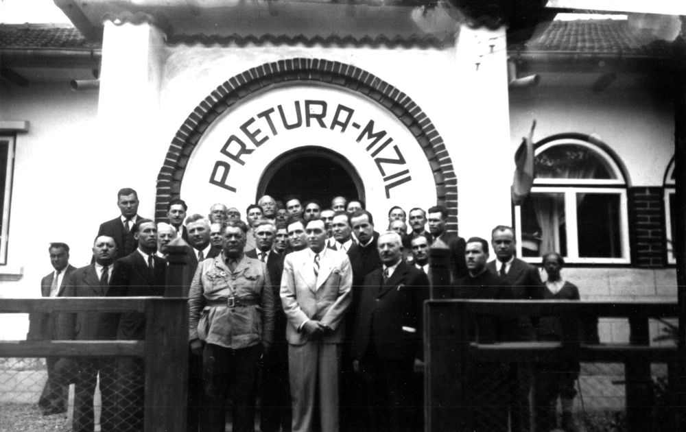
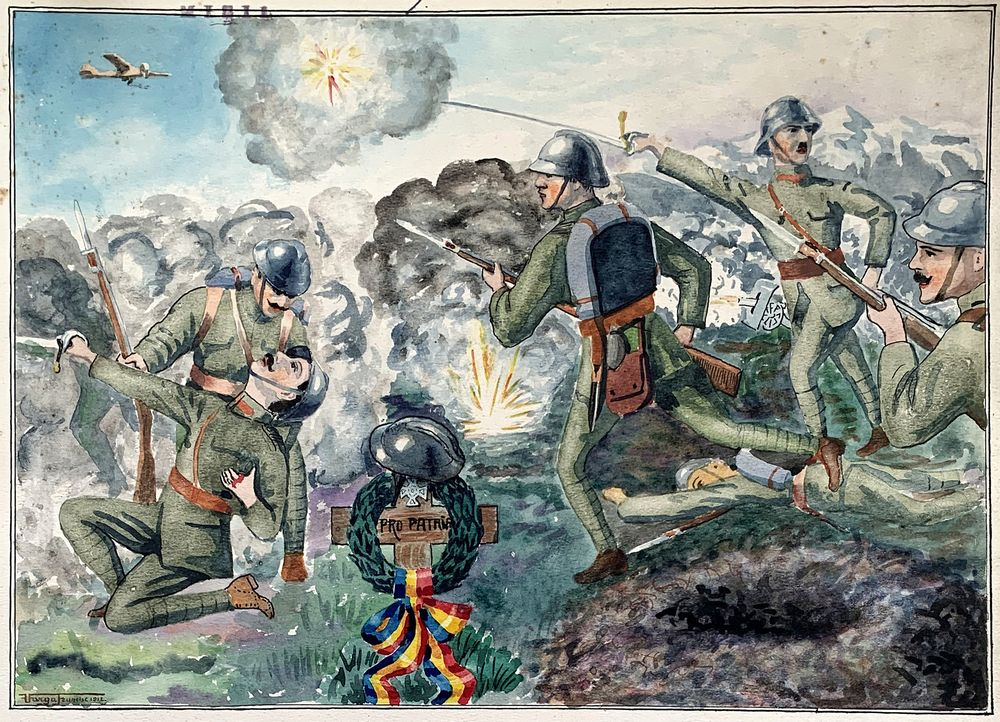

De ce ar putea fi nevoie de un muzeu la Mizil?
Surprinzător, un muzeu poate fi unghiul din care privim cu ochi noi oricare loc.

Casa C. Condeescu, fațada principală. Fotografie de epocă.
Primul muzeu din istoria orașului Mizil
De fapt, ideea de muzeu nu ne este atât de străină. Cu toții păstrăm lucruri vechi de care suntem atașați. La unele renunțăm cu timpul, dar sigur avem motive pentru care le-am păstrat atâta vreme. Cu toții avem muzee personale, iar cele mai multe sunt imaginare. Deținem colecții de amintiri, de care se mai agață câte un obiect care uneori parcă se încăpățânează să ne însoțească. Construim povești în jurul lui, îi dăm valoare și putere. La altele renunțăm cu ușurință, fie pentru că nu le prețuim, fie pentru că prezentul este mai puternic.
Ideea de muzeu nu e nouă la Mizil. A existat un muzeu parohial în perioada interbelică. Fostul primar mizilean Spirică Anastasiu a scris în anii ’60, în încercările sale monografice, despre nevoia unui muzeu. Școlile generale și liceele au avut în anii ’70-’80 puncte muzeistice datorate contribuției elevilor și familiilor lor. Apoi acele obiecte au fost ascunse în încăperi depozit, uitate, dezasamblate, înstrăinate sau dispărute. Au urmat crize economice și politice, lumea s-a reașezat în forme noi, iar cei care au avut cândva energia scotocirii prin arhive au îmbătrânit între timp.
Puterea de a arăta ceva se poate ascunde în cele mai neașteptate obiecte și istorii.
Modul în care le expunem le poate face extraordinare, ca și cum am vorbi despre locuri de la capătul lumii.
Necunoscutul naște curiozitatea. Ce știi despre Mizil?
Șapte săli, șapte cuvinte-cheie. Fiecare deschide o ușă spre o parte mai puțin cunoscută a orașului.

Luminiș
Holul central. Legenda luminișului de la marginea Codrilor Vlăsiei, birjarii din strada Poterașilor și un oraș care a ars de zeci de ori.

Picior de Paris
Stereotipuri, hărți și măsurători: cum a devenit Mizilul etalonul marginii.

Pâine albă.
Zile negre.
Contrastele orașului: colaci și pomeni, lăutari, incendii și ruine.

Drum de fier
Gara, trenurile și călătoriile care au legat Mizilul de lume și de literatură.

Cocoșul roșu
Viața publică, primarii și politica de provincie, spuse prin basmul cu cocoșul roșu.

Amor/ Umor
Viața privată, căsnicii și amoruri, așa cum le-au scris teatrul și presa satirică.

Sub arme
Regimentul, aerodromul, războaiele, dar și teatrul și fotbalul.